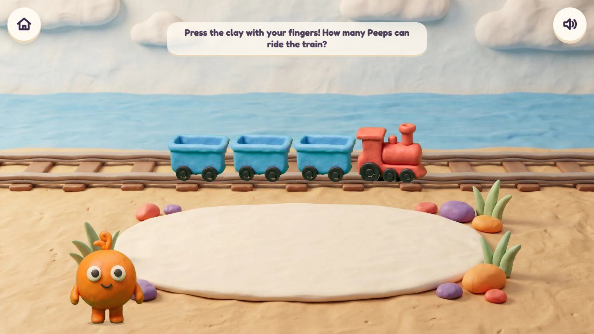
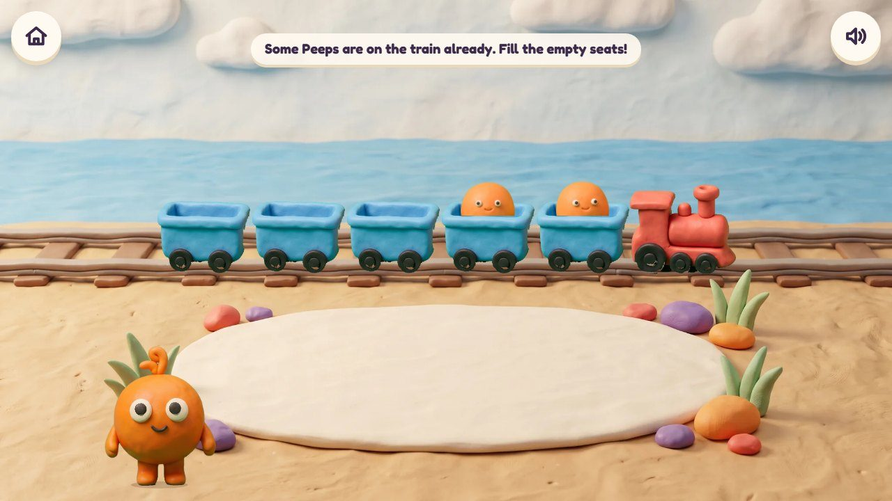
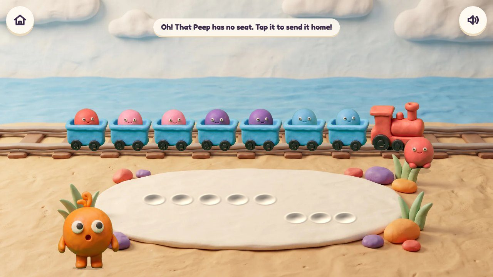

Poke Pals
Press the clay with your fingertips: Peeps pop out and ride the roller coaster.
51 lessons (17 taught here first, the rest practised here) in 6 topics:
Counting & NumbersAdding & Taking AwayTimes & SharingPlace ValueShapes & SpacePatterns & Graphs

The game
Pom's Peeps ride a little roller coaster on the beach (the ride you picked). The child presses the clay mat with one or more fingertips; a Peep pops out of every dent and hops into a seat. The coaster has two cars of five seats: ten seats as two fives, a ten-frame on the track. An empty seat glows to show what is missing, and when all ten are full it rides the loop.
Hands-on
Press with fingertips (several at once), drag a Peep, tap the coaster to send it round.
The end of a round
Full: the coaster rides the big loop with ten happy Peeps.
How it plays
These frames are the real app today; the frames further down show the same game in other lessons and ages.

1Press the clay
The mat waits for fingertips; the empty train stands on the track.
🔊 “Press the clay with your fingers! How many Peeps can ride the train?”

2Peeps pop out
Every fingertip leaves a dent and a Peep pops out of it, counted aloud.
🔊 “Three Peeps!”

3Fill the empty seats
Some Peeps are already on board: how many more?
🔊 “Some Peeps are on the train already. Fill the empty seats!”

4One too many
A Peep with no seat waits by the engine until it is tapped home.
🔊 “Oh! That Peep has no seat. Tap it to send it home!”
The quick round (from age 6)
The Peeps are already on board: look at the cars and type the answer (7 and how many make 10; 8 + 5). Ten questions at 6-7, a 60-second round from 8; your time and your best on screen; only right answers count; a miss shows the answer and comes back later. No clock under 6.
The same game, other lessons and ages
The badge at the top left says the topic, the lesson and the age.
5Make 10 · age 5
Seven Peeps on the coaster: the three empty seats glow. Three fingertips fill it.

6Make 10 to add · age 6
8 + 5: two Peeps fill the coaster (ten), three wait for the next ride: 10 + 3 = 13.
From age 3 to 7
| Age 3Pre-school | Count 1 to 5: press, a Peep pops out, Pom counts aloud, each sits in its own seat. |
| Age 4Pre-K | Count to 10; one more and one fewer; put together and take away up to 5. |
| Age 5Kindergarten | Make 10: how many more fill the coaster? Teen numbers: a full coaster and some more. Stories at the station. |
| Age 6Grade 1 | Add through 10 (fill the coaster first), tens and ones to 120, stories. Quick rounds begin. |
| Age 7Grade 2 | Odd and even: do the Peeps all sit in pairs? Equal groups: the same in every car. |
| Age 8 to 10Grades 3 to 5 | From Grade 3 these lessons are practice screens, not games. |
What changes from lesson to lesson
Numbers
up to 5 at 3, to 10 at 4, to 20 at 5, then tens, and groups of up to 10
What you see
only Peeps at first; then numbers on the cars; then the number sentence
Help
Pom counts aloud; empty seats glow; after a miss the seats are counted one by one
How you answer
fingertips and dragging; the number pad from 5
The story
who gets on and off at which station
Its 51 lessons
Age by age they are on the full list; here grouped by topic (the first activity named teaches a lesson, the others practise it).
Counting & Numbers 25
- Count 1, 2, 3
early yearsPoke Pals · Peek-a-Peep - How many? Up to 3
early yearsPoke Pals · Critter Maker - Count to 5
early yearsPeep Parachutes · Poke Pals - How many? Up to 5
early yearsPoke Pals · Critter Maker - Numbers 1 to 5
early yearsPeek-a-Peep · Poke Pals - One more
early yearsPeep Parachutes · Poke Pals - More or fewer?
early yearsSeesaw Twins · Poke Pals - The same number
early yearsPoke Pals · Critter Maker - Count to 10
early yearsPeep Parachutes · Poke Pals - How many? Up to 10 in a row
early yearsPoke Pals · Critter Maker - How many? All mixed up
early yearsPoke Pals · Peek-a-Peep - Numbers 0 to 10
early yearsPeek-a-Peep · Poke Pals - Zero means none
early yearsPoke Pals · Peek-a-Peep - Make a group of 6, 7 or 8
early yearsPeep Parachutes · Poke Pals - More, fewer or the same
early yearsSeesaw Twins · Poke Pals - One more, one fewer
early yearsPeep Parachutes · Poke Pals - What comes next?
early yearsParcel Post · Poke Pals - First, second, third
early yearsParcel Post · Poke Pals - Count to 20
K.CC.1Parcel Post · Poke Pals - Count to 100 in ones
K.CC.1Number Lift · Poke Pals - Count to 100 in tens
K.CC.1Number Lift · Poke Pals - How many? Up to 20
K.CC.5Poke Pals · Peek-a-Peep - Count out a number
K.CC.5Peep Parachutes · Poke Pals - Each number is one more
K.CC.4Parcel Post · Poke Pals - Compare groups
K.CC.6Seesaw Twins · Poke Pals
Adding & Taking Away 17
- Some more come
early yearsPeep Parachutes · Poke Pals - Put together, up to 5
early yearsPoke Pals · Critter Maker - Take away, from 5
early yearsIsland Hopper · Poke Pals - Five and some more
early yearsPeek-a-Peep · Poke Pals - Story time: how many now?
early yearsIsland Hopper · Poke Pals - Adding is putting together
K.OA.1Poke Pals · Critter Maker - Taking away
K.OA.1Island Hopper · Poke Pals - Adding stories within 10
K.OA.2Island Hopper · Poke Pals · Treasure Shop - Two parts make a number
K.OA.3Chocolate Snap · Poke Pals · Seesaw Twins - Make 10
K.OA.4Poke Pals · Kart Cup · Volcano Pop - Add within 20 by counting on
1.OA.6Poke Pals · Number Lift - Take away within 20 by counting back
1.OA.6Number Lift · Poke Pals - Make 10 to add
1.OA.6Poke Pals · Peek-a-Peep - Back to 10 to take away
1.OA.6Poke Pals · Number Lift - Turn-around facts
1.OA.3Seesaw Twins · Poke Pals - Add within 100, making a new ten
2.NBT.5Marble Run · Poke Pals - Take away within 100, breaking a ten
2.NBT.5Poke Pals · Number Lift
Times & Sharing 1
- Equal groups
2.OA.4Raft Rescue · Poke Pals
Place Value 3
- Ten and some more
K.NBT.1Poke Pals · Marble Run - Build 11 to 19
K.NBT.1Poke Pals · Peek-a-Peep - Add a two-digit and a one-digit number
1.NBT.4Marble Run · Poke Pals
Shapes & Space 1
- In, on and under
early yearsPeep Parachutes · Poke Pals
Patterns & Graphs 4
- Sort by colour
early yearsCritter Maker · Poke Pals - Copy a pattern
early yearsCritter Maker · Poke Pals - Sort and count
early yearsCritter Maker · Poke Pals - Patterns: red, blue, red, blue
early yearsCritter Maker · Poke Pals
Questions
- The roller coaster with two cars of five (a ten-frame on the track): clear enough for 3- and 4-year-olds?
- Anything in the storyboard to change (say the frame number)?